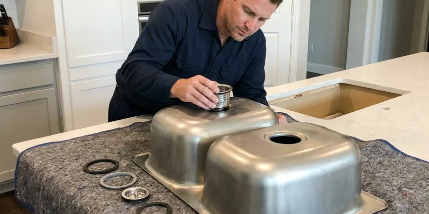
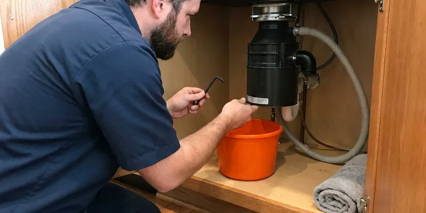
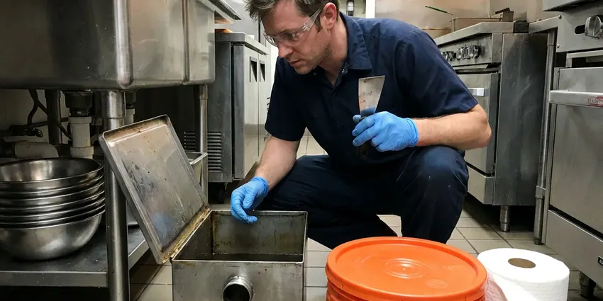

Insinkerator Installation in Richardson, TX
Get your new Insinkerator installed right the first time by DFJ Plumbing in Richardson, TX. We handle all models, making sure your kitchen plumbing works perfectly.
- Fast, Local Service
- Expert Plumbers
- Upfront Pricing
- Guaranteed Work

Expert Insinkerator Installation in Richardson, TX.
Contact DFJ Plumbing today for dependable garbage disposal services and a free estimate.
Professional Insinkerator Installation in Richardson, TX
DFJ Plumbing specializes in expert Insinkerator installation, helping homeowners in Richardson, TX upgrade their kitchens. Whether you're replacing an old unit or adding a new one, we ensure a smooth, problem-free setup.
Our expertise includes:
- Precise electrical and plumbing connections
- Proper mounting and sealing techniques
- Thorough testing for leaks and function

Additional Kitchen Plumbing Services in Richardson, TX
Our kitchen plumbing services in Richardson, TX cover sinks, disposals, dishwashers, and grease traps so your kitchen keeps running without backups or leaks.


Kitchen Sink Installation near Richardson

Richardson garbage disposal repair specialists

Grease Trap Cleaning near Richardson

Customers
Why Choose DFJ Plumbing for Insinkerator Installation in Richardson, TX?
A professional installation prevents common issues like leaks or poor performance, saving you time and money down the road. We focus on durable, long-lasting results for your peace of mind.
- Code Compliance, We always install Insinkerator units according to current Texas plumbing and electrical codes, ensuring safety and legality.
- Clean Work, Our plumbers ensure a tidy workspace, removing your old unit and any debris, leaving your kitchen spotless.
- Reliable Function, We test every new Insinkerator thoroughly to confirm proper operation, grind efficiency, and leak-free performance.
Citywide Coverage
DFJ Plumbing proudly serves every neighborhood and suburb of Richardson for Insinkerator installation. No matter where you are in the metro area, our team is ready to bring expert service directly to your door.
Experienced Team
The DFJ Plumbing team brings years of specialized experience to every Insinkerator installation. We stay updated on the latest models and installation techniques, ensuring a professional job every time.
Safety-First Approach
Safety is paramount in every Insinkerator installation, especially regarding electrical connections and drain line integrity. We follow strict safety protocols to protect your home and our technicians.
Trusted Certified Richardson Plumbing Services Professionals
At DFJ Plumbing, we take pride in providing certified plumbing services throughout Richardson, TX. Backed by recognized industry credentials, our experienced plumbers combine technical skill with genuine customer care. Whether it is repair, installation, or maintenance, we follow strict safety and quality standards to deliver long-lasting results you can trust.
Call Us Now PHCC Plumbing Contractor Recognition
PHCC Plumbing Contractor Recognition Better Business Bureau (BBB) Accreditation
Better Business Bureau (BBB) Accreditation Angi Certified Pro
Angi Certified Pro ISO 9001 Quality Management Certification
ISO 9001 Quality Management CertificationDependable Insinkerator Installation Services in Richardson, TX
Standard Insinkerator Installation in Richardson
Our standard installation service covers the setup of new Insinkerator garbage disposals in existing kitchen sink drain lines. This includes connecting the unit to your plumbing, wiring it to an existing electrical outlet or switch, and ensuring all seals are watertight. We properly secure the mounting assembly to prevent vibration and noise, common issues with improper installation. Our team also verifies the power source meets the unit's requirements, crucial for safe and efficient operation in Richardson homes.

Upgrading Your Insinkerator in Richardson, TX
If you're upgrading from an older, less powerful garbage disposal to a newer, more robust Insinkerator model, we can help. This service often involves removing the old unit, assessing the existing plumbing and electrical for compatibility, and installing the new, more powerful disposal. We ensure the new unit fits correctly under your sink and that the drain line can handle increased output. Upgrading can significantly improve your kitchen's waste management in Richardson, TX, especially with tougher food scraps.
New Construction Insinkerator Installation in Richardson
For new home builds or major kitchen remodels in Richardson, we provide comprehensive Insinkerator installation from scratch. This service involves installing the necessary plumbing and electrical rough-ins, then fitting the Insinkerator unit once the cabinetry and sink are in place. We coordinate with other contractors to ensure a seamless integration into your new kitchen design, adhering to all local building codes for a perfect finish.
Insinkerator Badger Series Installation in Richardson, TX
The Insinkerator Badger series is a popular, reliable choice for many Richardson, TX homeowners. We specialize in installing all Badger models, from the Badger 1 to the Badger 5. Our service ensures these units are correctly mounted, wired, and connected to your drain system. We pay close attention to the specific requirements of each Badger model, guaranteeing efficient performance and preventing common issues like leaks or loose connections.
Insinkerator Evolution Series Installation in Richardson
For those seeking advanced grinding technology and quieter operation, the Insinkerator Evolution series is an excellent option. Our plumbers are experts in installing Evolution models like the Essential, Compact, and Excel. These units often require specific electrical considerations and careful plumbing connections due to their larger size and more complex features. We ensure your Evolution series disposal operates at peak efficiency and with minimal noise in your Richardson kitchen.
Commercial Insinkerator Installation in Richardson, TX
Beyond residential services, DFJ Plumbing also offers commercial Insinkerator installation for businesses in Richardson, TX. Commercial-grade disposals are built for heavier use and require specialized plumbing and electrical setups. We install robust units designed to handle the demands of restaurants, cafes, and other food service establishments, ensuring compliance with commercial plumbing codes and minimizing disruption to your operations.
Insinkerator with Air Switch Installation in Richardson
For added convenience and a cleaner look, many homeowners opt for an Insinkerator with an air switch. This allows the disposal to be activated by pressing a button mounted on the countertop, rather than a traditional wall switch. We expertly install these air switches, integrating them seamlessly with your new Insinkerator unit. This includes drilling the countertop if necessary and ensuring a safe, reliable connection in your Richardson kitchen.

Cost-Effective Insinkerator Installation in Richardson, TX
DFJ Plumbing provides cost-effective Insinkerator installation services across Richardson, TX. While the cost of the unit itself varies by model, our labor rates are competitive and transparent. We help you choose a unit that fits your budget and needs, then provide a clear, upfront quote for the installation. Our goal is to offer high-quality service without unexpected charges, ensuring you get the best value for your investment.
Insinkerator Installation Near Me in Richardson, TX
Looking for 'Insinkerator installation near me' in Richardson, TX? DFJ Plumbing is your local solution. Our team of certified plumbers is strategically located to respond quickly to your service requests, ensuring prompt and efficient installation of your new garbage disposal. We pride ourselves on being a trusted part of the local community.
When you need reliable Insinkerator installation close to home, remember DFJ Plumbing. We understand the specific plumbing challenges and building styles prevalent in Richardson, allowing us to provide tailored and effective solutions. Our commitment is to deliver expert service right to your neighborhood.
DFJ Plumbing at a Glance
- Fully licensed plumbing team covering Richardson, TX
- Same-day appointments and 24/7 emergency response
- Clear written estimates, no hidden fees
- 4.9-star rated by 812+ Texas customers
Richardson Map
Richardson Information
- Population
- 117,435
- Area codes
- 972/469/214
- Service area
- Richardson and communities within 40 miles
- Nearby
- Plano, Garland, Allen, Rowlett
Proper Insinkerator installation is particularly important in Richardson, TX homes to handle various food waste efficiently and prevent clogs in local drain systems, which can be exacerbated by our soil and foundation types.
Expert Services
Trust our professionals for reliable DFJ Plumbing solutions in Richardson, TX.
Our Specialized Plumbing Services in Richardson, TX
At DFJ Plumbing, we provide a complete range of plumbing services across Richardson, TX. From leak detection to full system installations, our team ensures fast, precise, and affordable service for both residential and commercial properties. Explore our core services below:


How Our Insinkerator Installation Process Works in Richardson, TX
Our Insinkerator installation process is straightforward and designed for your convenience. We ensure a professional and efficient setup from start to finish.
Request a Quote
Call (737) 405-5978 or fill out our online form to schedule your Insinkerator installation. We'll discuss your needs, answer any questions, and provide a transparent quote.
Old Unit Removal
Our technicians will arrive on time to carefully remove your existing garbage disposal, if applicable. We ensure all connections are safely disconnected and the area is prepared.
New Installation
We expertly install your new Insinkerator, connecting it to your plumbing and electrical systems. We verify all seals, mounts, and wiring are secure and up to code.
Frequently Asked Questions About Insinkerator Installation in Richardson
The cost for Insinkerator installation in Richardson, TX typically ranges from $200 to $400 for labor, not including the unit itself. This can vary based on the complexity of the installation, such as electrical modifications or new plumbing runs, and whether an old unit needs to be removed. We provide upfront pricing after assessing your specific situation.
Most standard Insinkerator installations take between 1 to 2 hours. If there are complications, such as significant plumbing modifications or electrical work, it might take a bit longer. We strive for efficiency without compromising quality.
In most cases, a simple like-for-like replacement of a garbage disposal does not require a permit in Richardson. However, if new electrical circuits are being installed or significant plumbing alterations are made, a permit may be necessary. We will advise you if your specific installation requires one.
Signs that your old disposal needs replacing include frequent clogging, persistent leaks from the unit's body, unusual grinding noises, or complete failure to turn on. If repairs are becoming costly or frequent, replacement is often the more economical choice.
While some homeowners attempt DIY installation, it's often best left to professionals. Improper installation can lead to leaks, electrical hazards, or damage to the unit or your plumbing. Professional installation ensures safety, proper function, and adherence to local codes.
Yes, hard water prevalent in many parts of Texas can contribute to mineral buildup inside your garbage disposal, potentially affecting its grinding efficiency and lifespan over time. Regular cleaning and proper usage can help mitigate these effects, but professional installation ensures optimal performance from the start.
The Badger series are entry-level, reliable disposals for basic grinding needs. The Evolution series offers advanced multi-stage grinding, quieter operation, and larger capacities, designed for tougher food waste and a quieter kitchen experience. Your choice depends on your usage and budget.
We install all popular Insinkerator models, including the Badger series (Badger 1, 5), the Evolution series (Essential, Compact, Excel), and other specialized units. Our plumbers are trained to handle various sizes and power levels to meet your kitchen's needs.
What People Are Saying About Our Plumbing Experts?

Sofia M.
Two new toilets installed in one visit, no mess left behind, and the tech even adjusted a faucet he noticed was dripping. Fair pricing and really friendly.
Toilet Installation · Allen, TX
James P.
Our commercial plumbing system had a leak under the sink, and DFJ Plumbing handled it professionally. The plumbers arrived quickly and restored everything without disruption to our customers.
Commercial Plumbing · Richardson, TX
Patricia H.
We had a slab leak that two other companies could not find. DFJ Plumbing located it in under an hour, explained our options, and the price matched the quote to the dollar.
Slab Leak Repair · Wylie, TX
Daniel K.
A pipe burst at 11 pm and they actually answered. The plumber showed up within the hour, shut everything down, and had us back to normal the next morning. Could not ask for more.
Emergency Plumbing · Allen, TX
Emily R.
I called DFJ Plumbing for plumbing repair, and the technician was fast, polite, and thorough. They explained the problem clearly and fixed it the same day. I will definitely hire them again. Highly recommended!
Plumbing Repair · Allen, TX
Mark T.
When our office needed drain cleaning, DFJ Plumbing provided quick, reliable service. The plumber arrived on time and made sure every drain flowed perfectly before leaving. Very satisfied.
Drain Cleaning · Wylie, TX